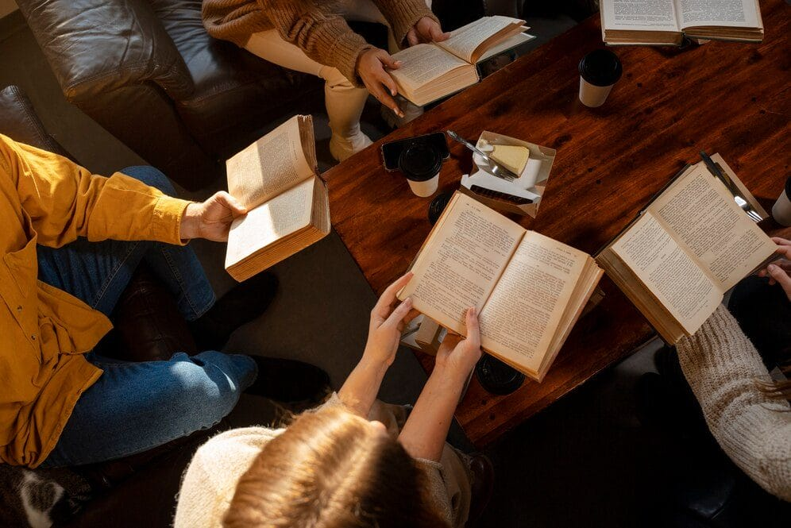
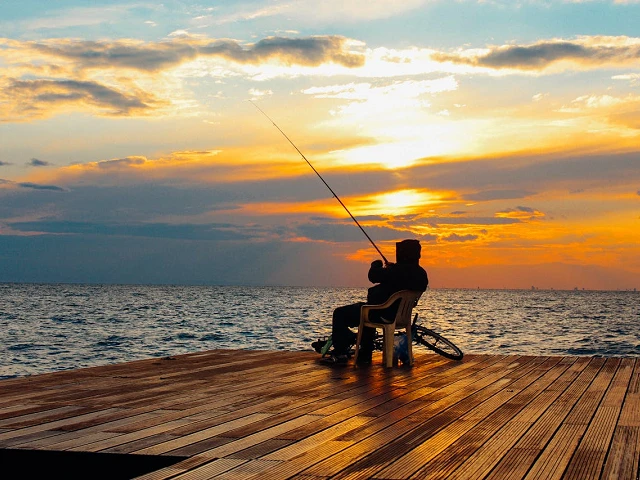

03
Hobi Saya

Membaca
Reading self-development, technology, and science-fiction books to broaden my knowledge and imagination.

Gaming
Enjoying strategy and adventure games that train quick thinking and problem-solving skills.

Fishing
Fishing teaches patience and a calm mind, making it a great escape from daily routines.
Exercise
Exercising regularly to maintain physical and mental well-being and stay productive every day.